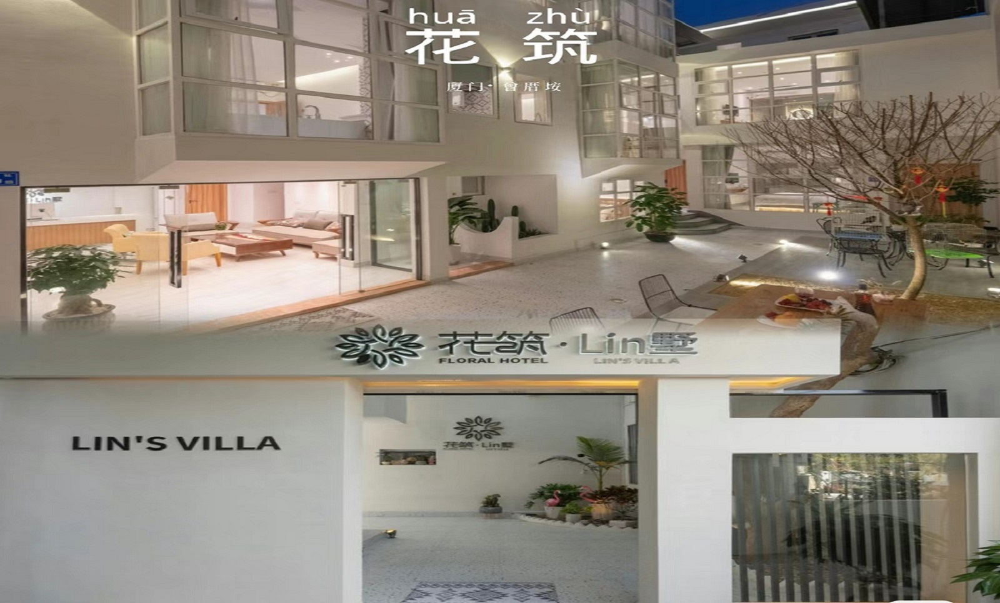
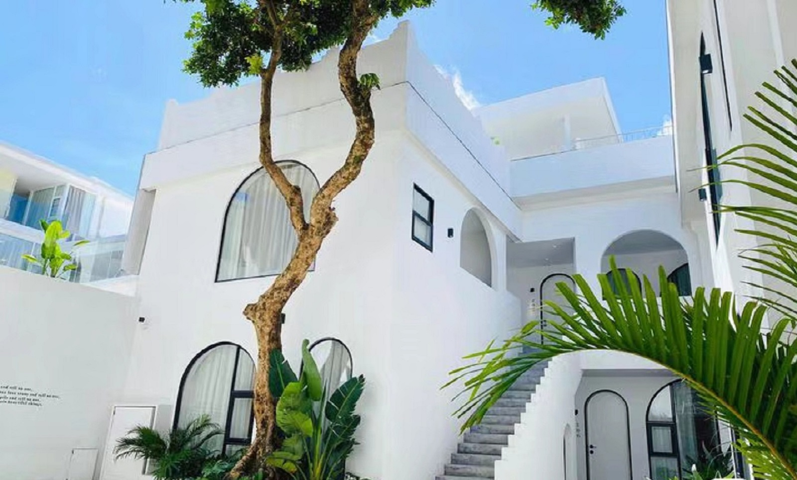
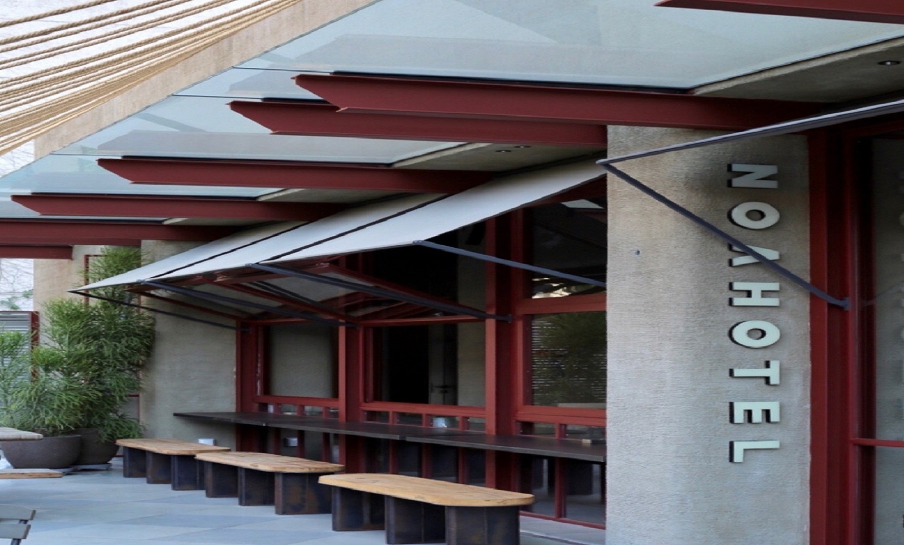
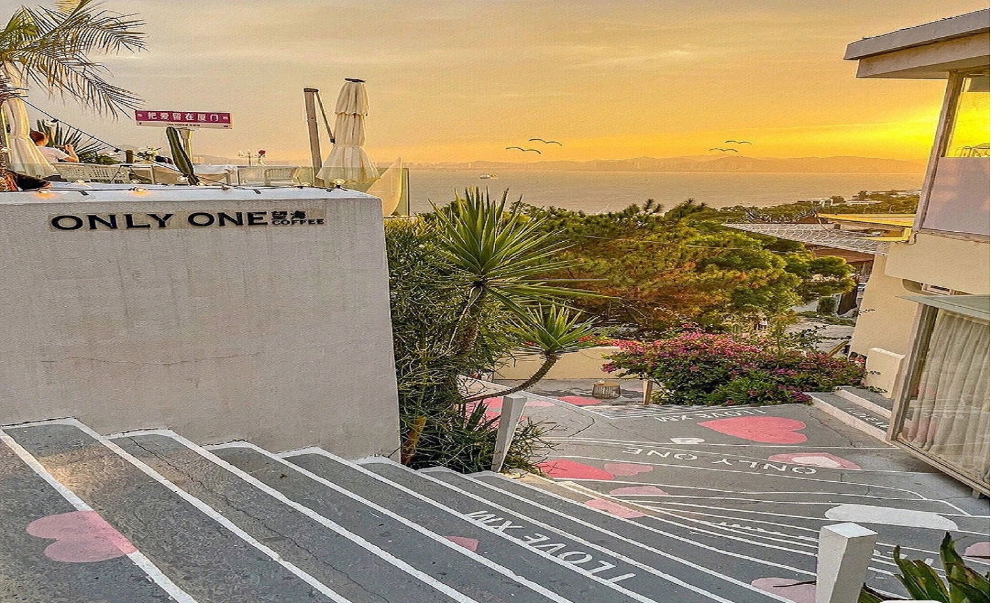

厦门住宿
|  |  |  |
| 花筑.Lin墅 | 一见未迟 | 乔木一号 |
| 位于思明区曾厝垵社，地处厦门美丽环岛路。出门步行约2分钟便是缤纷热闹的步行街，约8分钟便解近美丽的大海，客栈去小吃街走路约4分钟，去海边沙滩约8分钟，去厦大中山路鼓浪屿植物园等各景点都很方便 | 出门即小吃，步行3分钟到曾厝垵，公交直达中山路步行街，罗宾森购物广场，世茂双子塔等购物中心。附近农贸市场、生活超市、便利店、银行、药店、诊所等一应俱全 | 位于厦门市思明区，离中华街道、中山路很近，距离镇海路地铁站859m，距离曾厝垵4.5km |
|  | ||
| 艾美假日客栈 | 瞄居名宿 | 海尚雅歌酒店 |
| 位于厦门市湖里区南山冠军路，客栈被茂密的森林环绕，仿佛置身于天然氧吧，附近有一些特别好吃的小吃店，比如福建土冻笋、海蛎煎和闽南花生汤，出门有小车接送 | 楼下就是曾厝垵，离海很近，走路只需要几分钟，交通方便，三四分钟就可以走到公交车站，而且房间很干净 | 海尚雅歌酒店位于中山路，吃东西十分方便，基本上一整条街都是吃的，而且八市的海鲜大排档离这里非常近，出去打车也很方便 |